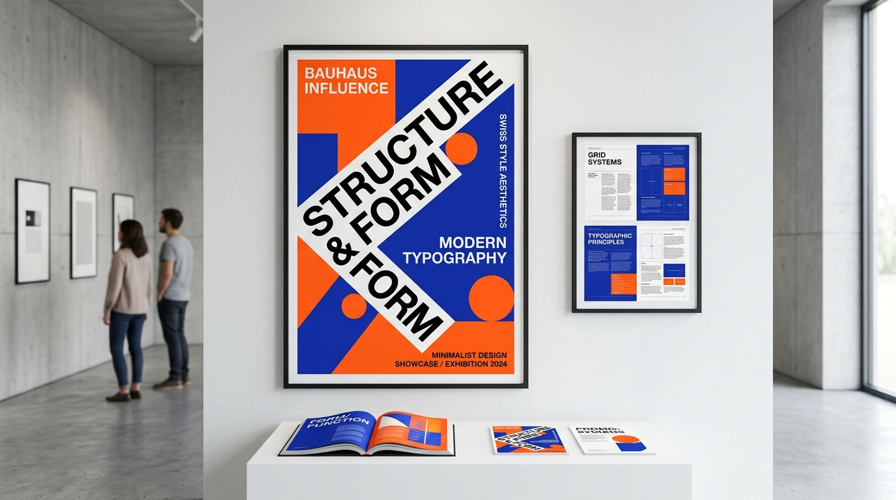

🖼️ 美學選圖：展現幾何網格與真實人文質感碰撞的平面藝術風格。
平面與視覺美學在 AI 快速生成過度精緻視覺的時代，平面設計界吹起「真實手作感與拼貼風 (Scrapbook Aesthetics)」！運用幾何網格搭配墨痕與復古字體，創造機器無法取代的人文溫度與獨特辨識度。參見
UX Collective 美學趨勢研究。
Graphic AestheticsRejecting algorithmic sameness, 2026 graphic design embraces organic textures, analog craft, and expressive typography. Refer to
UX Collective Aesthetics Guide.